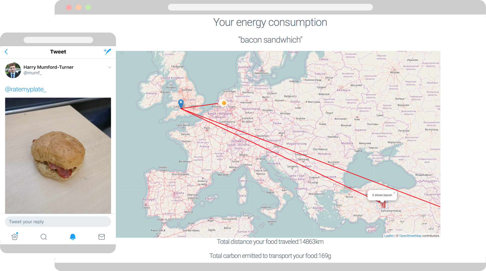
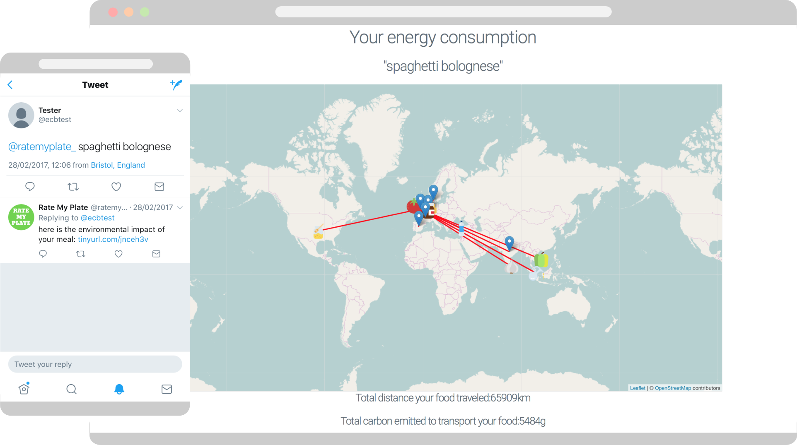

A Twitter bot for the environment
Feb 2017
In a 24-hour hackathon, my team and I built a Twitter bot (no longer running live) which calculates the carbon footprint of a meal from a tweet.
The bot identified the meal of tweeted photos with a model developed using TensorFlow, and regular tweets were parsed using the Python Natural Language Toolkit. A range of databases with different food and transportation sources and costs allowed the ingredients of the meal to be determined and the carbon footprint calculated. This information was displayed on an interactive map and returned to the user via an automated reply system.